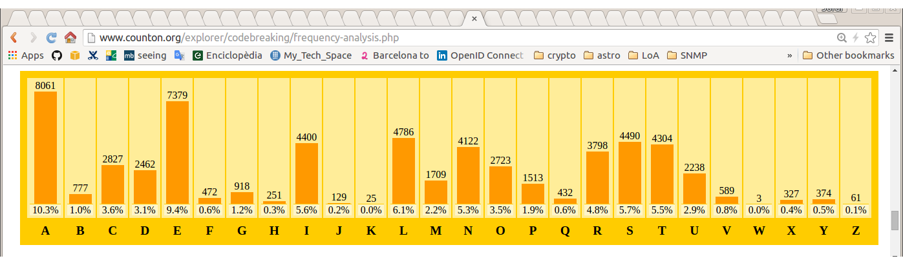
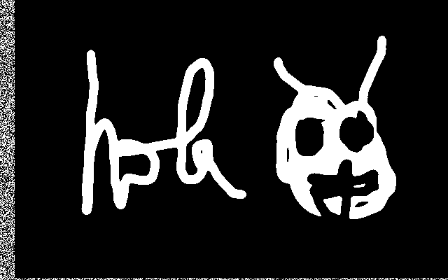

Introducción, Historia

“Curso de Introducción a la Criptografía” by Jordi Íñigo Griera is licensed under a
Creative Commons Attribution 4.0 International License.
Project hosted at github.com/jig/crypto
1976
La NSA selecciona un algoritmo de cifrado de IBM para comunicaciones de la administración: DES (Data Encryption Standard)
Whitfield Diffie y Martin Hellman generan el primer algoritmo práctico de criptografía asimétrica
Historia
(pre-1976)
Criptografía $\Rightarrow$ Cifrado
Hasta los '70 la criptografía servía para dificultar que un tercero pudiera discernir lo que se envía
$c = e(k,m)$
un mensaje $m$ (plain-text) se cifra con la función de cifrado $e()$, que se
le pasa junto a una clave $k$ para dar el mensaje
cifrado $c$ (cipher-text)
$m = d(k,c)$
para descifrar hace falta la clave $k$ y el mensaje cifrado $c$ a la función de descifrado
$m=d(k,c)$
El resultado $m$ es el mensaje en claro de vuelta
pre-1976
Hasta los '70 la criptografía o era "insegura" o no era "práctica"
Cifrado del César
Cambiamos cada letra de un mensaje, por una letra alternativa del alfabeto
Por ejemplo, para $k=3$
la función de cifrado $e(3,m)$ genera la siguiente tabla:
| $m$ | $c$ | |
| A | $\rightarrow$ | X |
| B | $\rightarrow$ | Y |
| C | $\rightarrow$ | Z |
| D | $\rightarrow$ | A |
| E | $\rightarrow$ | B |
| ... | ... |
Descifrado del César
Giremos la tabla
| $c$ | $m$ | |
| A | $\rightarrow$ | D |
| B | $\rightarrow$ | E |
| C | $\rightarrow$ | F |
| D | $\rightarrow$ | G |
| E | $\rightarrow$ | H |
| ... | ... |
Seguridad del cifrado del César *
HOLAMON
ELIXJLK
¿qué podemos hacer si tenemos acceso al texto cifrado ELIXJLK?
$0 < k < 26 \implies $ podemos hacer un ataque de fuerza bruta
si el mensaje es suficientemente largo, podemos analizar la frecuencia de aparición de los carácteres
Seguridad del cifrado del César
$0 < k < 26 \implies $ podemos hacer un ataque de fuerza bruta
Un ataque de fuerza bruta implica probar sobre el mensaje cifrado $c$ todas las posibles claves $k_i$ hasta que encontremos la "buena":
- descifrar con la clave $\overset{?}{m} = d(c, k_i)$ ...
- ...y validar si $\overset{?}{m}$ es válido (o sea, si $m=\overset{?}{m}$)
Redundancia
- descifrar con la clave $\overset{?}{m} = d(c, k_i)$ ...
- ...y validar si $\overset{?}{m}$ es válido (o sea, si $m=\overset{?}{m}$)
el segundo paso no siempre es posible
exige que el espacio de mensajes contenga mensajes válidos (pocos) y mensajes inválidos (muchos)
hace falta redundancia
que en el ejemplo anterior la redundancia la tenemos ya que no cualquier combinación de carácteres genera "palabras" comprensibles
una contramedida contra el ataque de fuerza bruta contra el cifrado del César es minimizar la redundancia de los mensajes (compresión, etc.)
Descifrar
- descifrar con la clave $\overset{?}{m} = d(c, k_i)$ ...
- ...y validar si $\overset{?}{m}$ es válido (o sea, si $m=\overset{?}{m}$)
el primer punto implica conocer el algoritmo de
(des)cifrado $d(\circ,\circ)$
Principio de Kerckhoffs: siempre supondremos que un atacante conoce $d(\circ,\circ)$
la única cosa que no debe conocer es la clave $k$
Ataques de fuerza bruta
Las contramedidas contra los ataques de fuerza bruta son:
- que la operación de descifrado sea costosa
- que haga falta realizar muchas operaciones de descifrado
que la operación sea costosa tiene el problema que quien descifra lícitamente tiene un coste innecesario: actualmente esto no se recomienda
que el atacante esté obligado a probar muchas claves
muchas claves
en una CPU "estándar" se prueban $1.000.000$ clave/CPU/s
es decir: $10^6$ clave/CPU/s
es decir: se prueban $10^{9}$ clave/s en $1000$ CPU
es decir: se prueban $3,6·10^{12}$ clave/h en $1000$ CPU
en AWS EC2 una c4.large cuesta 10 céntimo/h
es decir $3,6·10^{11}$ clave/€
si tenemos capacidad de diseñar/fabricar $d(\circ,\circ)$ en hardware (ASIC) los costes bajan después de un periodo de amortización
Muchas claves
$10^{11}$ clave/€ en números redondos
e.g. si nuestro "secreto" tiene un coste de 1000 €,
nos hacen falta $2·10^{14}$ claves diferentes ($\approx2^{48}$)
Seguridad del cifrado del César
HOLAMON
ELIXJLK
¿qué podemos hacer si tenemos acceso al texto cifrado ELIXJLK?
$0 < k < 26 \implies $ podemos hacer un ataque de fuerza bruta
si el mensaje es suficientemente largo, podemos analizar la frecuencia de aparición de los carácteres
Análisis de frecuencia

(artículo de Catalunya en la Viquipèdia / counton.org )

(artículo del FCB en la Viquipèdia / counton.org )
Análisis de frecuencia
la estadística se mantiene en textos diferentes
¡la estadística se mantiene inalterada después del cifrado!
podemos aprovechar que la estadística se mantiene
para poder encontrar la clave $k$
Mejoras al
cifrado del César
Cifrado de Vigenère *
Similar al cifrado del César, pero $k$ ahora será una secuencia de números en lugar de un sólo número (e.g. antes $k=3$):
e.g. $k = \{3,24,10\}$
Nota: habitualmente se escriben las letras corresponendientes a los números: $k = \{\text{D},\text{Y},\text{K}\}$
ejemplo:
HOLAMON
DYKDYKD
KMVDKYQ
Vigenère: Espacio de claves
Ahora el espacio de claves es (clave de $3$ carácteres):
$\begin{eqnarray} 0 & < k & < {26}^{3} \\ 0 & < k & < 17576 \end{eqnarray}$
no cuesta mucho incrementar el espacio de claves utilizando
"contraseñas" más largas
en general, para $n$ carácteres:
$0 < k < {26}^{n}$
e.g. $n=8 \implies 26^{8} = 2·10^{11}$ (0,50 €)
e.g. $n=12 \implies 26^{12} = 10^{17}$ (200.000 €)
e.g. $n=16 \implies 26^{16} = 4·10^{22}$ (deuda de Grecia)
e.g. $n=17 \implies$ (PIB mundial)
Vigenère: Análisis frecuencial
Si segmentamos el texto cifrado de acuerdo a la longitud de la contraseña, cada fragmento de texto mostrará las mismas estadísticas del idioma...
sólo hace falta saber la longitud de la "contraseña" o...
...como el espacio de longitudes será probablemente limitado, podemos probarlos uno por uno hasta que tenemos una estadística reconocible
un espacio de claves grande no es suficiente
Confidencialidad perfecta
en general, seguridad incondicional
¿qué es la confidencialitad perfecta?
a partir del texto cifrado, no se puede deducir
ninguna propiedad*
del texto original en claro,
aunque el atacante tenga capacidad computacional infinita
*) a parte de la longitud
*) a parte del momento de enviarlo
*) a parte del número de mensajes
*) a parte de la latencia de la respuesta
¿es factible la confidencialidad perfecta?
sí,
y fue inventada y patentada por Vernam en 1917
y fue demostrada su "perfección" por Shannon en 1945
¿cómo la podemos implementar?
el cifrado de Vigenère sufría un problema similar al del César:
manifestaba la estadística del mensaje en claro
en el mensaje cifrado
podemos evitar que se manifieste la estadística en el texto cifrado, si utilizamos cada letra de la contraseña una sola vez
tenemos confidencialidad perfecta sii usamos Vigenére con una contraseña tan larga como el mensaje y no conocida por el atacante (aleatoria)
Bloques de un solo uso: cifrado
Vernam definió el one-time-pad de una manera similar (pero equivalente)
La función de cifrado $c = e(k, m)$ se implementa:
$e(k, m) = k \oplus m$
donde $\|k\| = \|m\|$
Nota:
$\oplus$ es la or-exclusiva o XOR
$\|\circ\|$ es la longitud en bits de $\circ$
XOR
$0 \oplus 0 = 0$
$0 \oplus 1 = 1$
$1 \oplus 0 = 1$
$1 \oplus 1 = 0$
XOR
$\cdots00000\cdots \oplus \cdots00000\cdots = \cdots00000\cdots$
$\cdots10010\cdots \oplus \cdots11000\cdots = \cdots01010\cdots$
$\cdots11111\cdots \oplus \cdots11000\cdots = \cdots00111\cdots$
$\cdots00011\cdots \oplus \cdots11100\cdots = \cdots11111\cdots$
$\cdots10101\cdots \oplus \cdots01010\cdots = \cdots11111\cdots$
etc.
"$e(k, m) = k \oplus m$
donde $\|k\| = \|m\|$"
se traduce en, por ejemplo:
$\begin{aligned} m &= 10011001 \\ k &= 01010101 \\ c &= 11001100 \end{aligned}$
Bloque de un solo uso: descifrado
$d(k, c) = k \oplus c$
es fácil demostrar que funciona ya que:
$\begin{aligned} m &= d(k, c) \\ m &= d(k, e(k, m)) \\ m &= k \oplus c \\ m &= k \oplus (k \oplus m) \\ m &= (k \oplus k) \oplus m \\ m &= \{0\}^{\|k\|} \oplus m \\ m &= m \end{aligned}$
"$e(k, m) = k \oplus m$
donde $\|k\| = \|m\|$"
se traduce en, por ejemplo:
$\begin{aligned} m &= 10011001 \\ k &= 01010101 \\ c &= 11001100 \end{aligned}$
Experimento con Gimp
(tienes que tener Gimp instalado para que te funcione el experimento)
clica sobre la imagen y abre el fichero con Gimp
mira que está compuesto por dos capas (Ctrl+L):
la clave $k$ y el mensaje $m$ combinadas con substract (XOR)
$c$

$k$
$m$
Bloque de un solo uso: ¿perfecto?
Shannon demostró que los bloques de un solo uso son "perfectos", y además demostró que la longitud en bits de la clave $k$:
$\|k\| \geq \|m\|$
y por tanto, que los bloques de un solo uso hiciesen servir
$\|k\| = \|m\|$
era la manera más eficiente de obtener confidencialidad perfecta
Bloque de un solo uso: “perfecto”
todos los mensajes posibles se pueden obtener dada la clave apropiada a partir de un bloque cifrado $c_i$
$
\begin{aligned}
m_{ai} &= d(k_a, c_i) \\
m_{bi} &= d(k_b, c_i) \\
m_{ci} &= d(k_c, c_i) \\
& \quad \vdots
\end{aligned}
$
cada clave aplicada a $c_i$ me dará todos los mensajes posibles de $\|m\|$ bits
($\|m\| = \|k\|$ combinaciones)
un atacante no puede aprender nada a partir de $c_i$
$\Downarrow$
la confidencialidad es “perfecta”
vulnerabilidades
cero (incluso es invulnerable a los ataques de fuerza bruta)...
...mientras se cumplan las hipótesis de trabajo:
- clave $k$: sólo un solo uso
- clave $k$: aleatoria (i.e. uniformemente distribuida)
pre-1976
Hasta los '70 la criptografía o era "insegura" o no era "práctica"
Bloque de un solo uso: poco práctico
$\|k\| = \|m\|$
cuesta tanto acordar $k$ de forma segura, como enviar directamente $m$ en claro por el mismo canal seguro
El teléfono rojo entre Washington y Moscú fue en realidad un teletipo que usaba cifrado de bloque de un solo uso
La clave $k$ se intercambiaba por valija diplomática en cinta que se entregaba en ambos sentidos. Mientras no hacía falta, se guardaba protegida. Y se destruía después de ser usada
En este caso la clave se acordaba/se preparaba por adelantado para cuando hiciera falta enviar algún mensaje poderlo hacer de forma inmediata
Además, el one-time-pad permitía trabajar de forma segura sin intercambiar ningún algoritmo secreto que diera ventaja técnica al enemigo